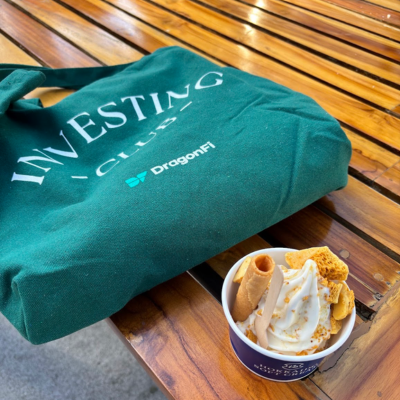
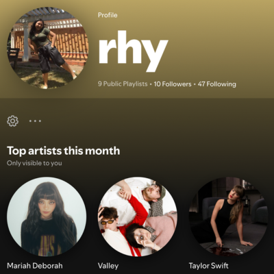
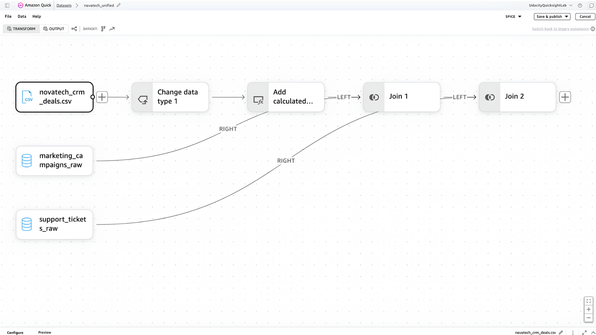

About Me.
I'm passionate about finance, tech, and everything multimedia.
You want to learn how to invest? I am the person who you can run to!
Things I Love.
-

01 Finance (investing & trading). -

02 Streaming pop & indie songs. -
03 Any matcha goodies.
Passion Projects.
See more on GitHub ›Visual Profile Video Project
Produced and edited a grayscale visual profile featuring an A-roll interview with B-roll documentation and voiceover integration for MMS 175: Videography in Multimedia.
NovaTech Revenue Intelligence Dashboard

Developed a Business Intelligence dashboard using Amazon QuickSight that aggregates raw data from CRM deals, marketing campaigns, and support tickets to provide visibility into the marketing funnel, sales pipeline, and customer health.
Customer Churn Prediction Analysis
For GCI Omnicampus April 2026 intake, where SQL queries has been written to extract data, filter results, and run data quality checks on large datasets. Built a customer churn prediction model to find trends and make a data report based on the results.